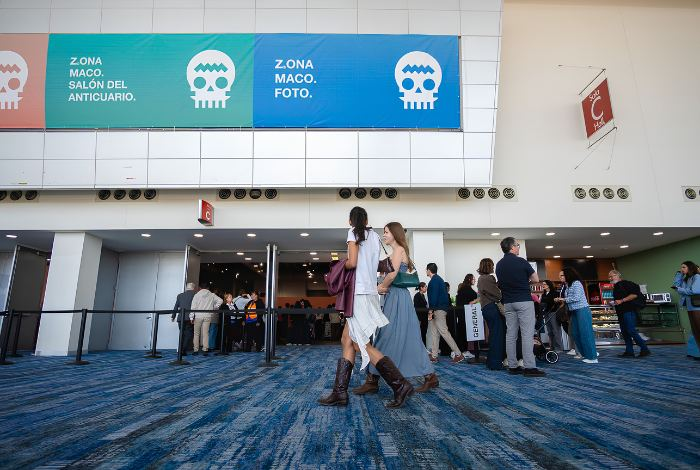

Festivals · Arts
ZⓈONAMACO 2027
- Dates
- –
- Venue
- Centro Citibanamex
- Location
- Mexico City, Mexico
- Format
- In-person
- Category
- Arts
- Industry
- Contemporary art fair
- Organiser
- ZⓈONAMACO
- Official website
- https://zsonamaco.com/boletos/
About
Official page names the venue Centro Banamex (Av. del Conscripto 311). Mexico dates are local (Mexico City time, UTC-6, unless the venue is in another Mexican time zone).
Topics: contemporary art, design, photography, antiques.
No organiser attendance figure found on the official pages checked (23 Nov 2026). Ranked by an estimated size tier 'large' (about 10,000-100,000 attendees; our judgement from format, venue and scale, not an official number).
Sources
- Official — https://zsonamaco.com/boletos/